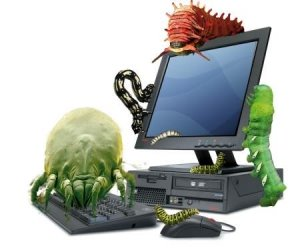
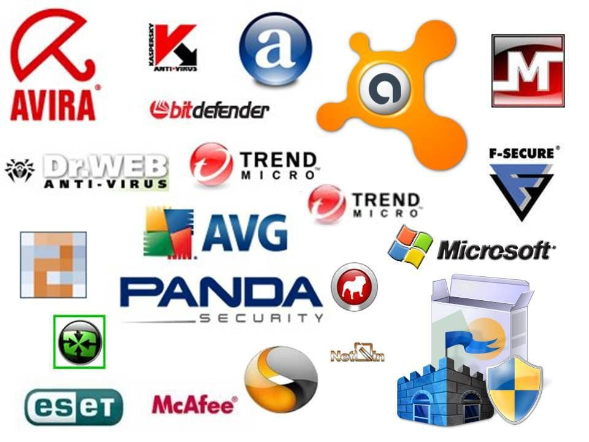
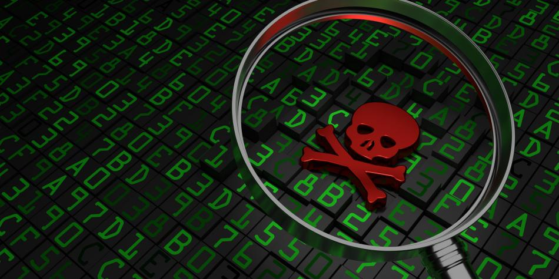
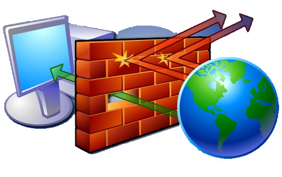
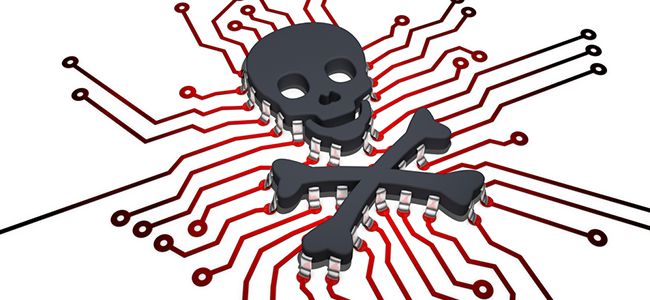
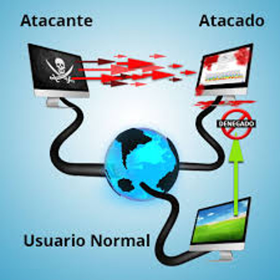
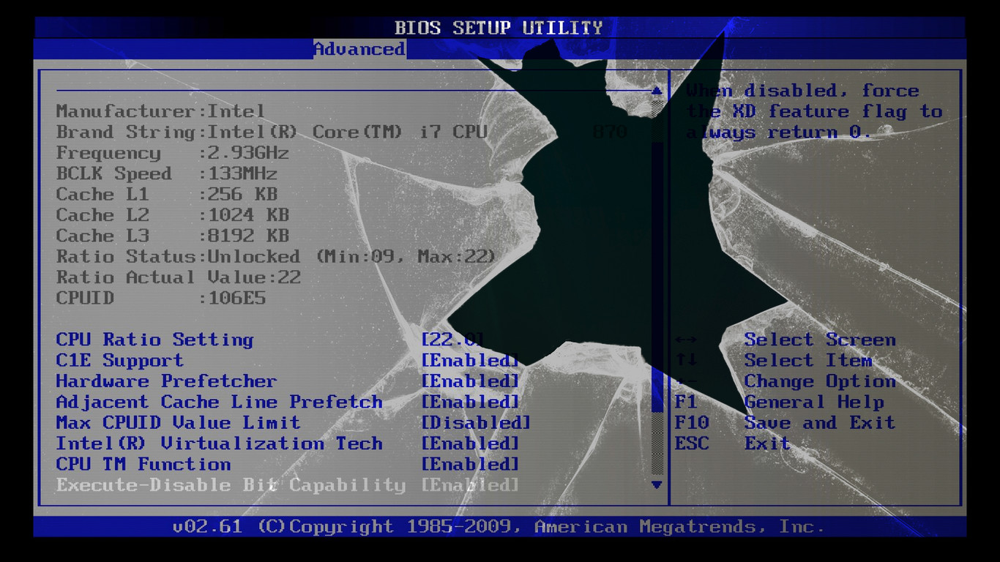

Amenaza
-

http://casandrasoft.com/wp-content/uploads/2017/12/Virus.jpg
Es toda circunstancia, evento o persona que tiene el potencial de causar daño a un sistema en forma de robo, destrucción, divulgación, modificación de datos o negación de servicio (DoS).
Antivirus
-

http://freelancingsolution.com/wp-content/uploads/2015/07/Antivirus.jpg
Es una categoría de software de seguridad que protege un equipo de virus, normalmente a través de la detección en tiempo real y también mediante análisis del sistema, que pone en cuarentena y elimina los virus. El antivirus debe ser parte de una estrategia de seguridad estándar de múltiples niveles.
Ataques Web
-

http://www.eltiempo.com/files/article_main/uploads/2017/07/31/597fb59a4365d.jpeg
Es un ataque que se comete contra una aplicación cliente y se origina desde un lugar en la Web, ya sea desde sitios legítimos atacados o sitios maliciosos que han sido creados para atacar intencionalmente a los usuarios de ésta.
Ciberdelito
-

https://urabanoticias.com/wp-content/uploads/2018/03/WhatsApp-Image-2018-03-27-at-12.54.57-PM.jpeg
Es un delito que se comete usando una computadora, red o hardware. La computadora o dispositivo puede ser el agente, el facilitador o el objeto del delito. El delito puede ocurrir en la computadora o en otros lugares.
Encriptación
-

https://www.importancia.org/wp-content/uploads/encriptacion.jpg
Es un método de cifrado o codificación de datos para evitar que los usuarios no autorizados lean o manipulen los datos. Sólo los individuos con acceso a una contraseña o clave pueden descifrar y utilizar los datos. A veces, el malware utiliza la encriptación para ocultarse del software de seguridad. Es decir, el malware cifrado revuelve el código del programa para que sea difícil detectarlo.
Firewall
-

https://i0.wp.com/edtechchris.com/wp-content/uploads/2017/02/firewall.png?resize=563%2C353
Es una aplicación de seguridad diseñada para bloquear las conexiones en determinados puertos del sistema, independientemente de si el tráfico es benigno o maligno. Un firewall debería formar parte de una estrategia de seguridad estándar de múltiples niveles.
Malware
-

https://antivirus.comodo.com/blog/wp-content/uploads/2017/08/shadowpad-malware.png
Es la descripción general de un programa informático que tiene efectos no deseados o maliciosos. Incluye virus, gusanos, troyanos y puertas traseras. El malware a menudo utiliza herramientas de comunicación populares, como el correo electrónico y la mensajería instantánea, y medios magnéticos extraíbles, como dispositivos USB, para difundirse. También se propaga a través de descargas inadvertidas y ataques a las vulnerabilidades de seguridad en el software. La mayoría del malware peligroso actualmente busca robar información personal que pueda ser utilizada por los atacantes para cometer fechorías.
Negación de servicio (DoS)
-

http://www.mile-sec.com/sites/default/files/imagenes/2017/jul/28072017.jpg
Es un ataque en el que el delincuente intenta deshabilitar los recursos de una computadora o lugar en una red para los usuarios. Un ataque distribuido de negación de servicio (DDoS) es aquel en que el atacante aprovecha una red de computadoras distribuidas, como por ejemplo una botnet, para perpetrar el ataque.
Seguridad Informatica
-
https://encrypted-tbn0.gstatic.com/images?q=tbn:ANd9GcQMU63OsGggz_U2HgBTDaNFckrIt6aCE3DERckqdivi_UIYxfbN
se podría definir como cualquier medida que impida la ejecución de operaciones no autorizadas sobre un sistema o red informática, cuyos efectos podrían conllevar a daños a la información, comprometer la confidencialidad, autenticidad o integridad, disminuir el rendimiento de los equipos o bloquear el acceso de usuarios autorizados al sistema.
Virus
-
https://i.ytimg.com/vi/Newc4_ONKiM/hqdefault.jpg
Programa informático escrito para alterar la forma como funciona una computadora, sin permiso o conocimiento del usuario. Un virus debe cumplir con dos criterios:
● Debe ejecutarse por sí mismo: generalmente coloca su propio código en la ruta de ejecución de otro programa.
● Debe reproducirse: por ejemplo, puede reemplazar otros archivos ejecutables con una copia del archivo infectado por un virus. Los virus pueden infectar computadores de escritorio y servidores de red.
Vulnerabilidad
-

https://www.hd-tecnologia.com/imagenes/articulos/2018/04/Nueva-vulnerabilidad-de-Intel-permite-borrar-o-bloquear-escritura-de-BIOS.jpg
Es un estado viciado en un sistema informático (o conjunto de sistemas) que afecta las propiedades de confidencialidad, integridad y disponibilidad (CIA) de los sistemas. Las vulnerabilidades pueden hacer lo siguiente:
● Permitir que un atacante ejecute comandos como otro usuario.
● Permitir a un atacante acceso a los datos, lo que se opone a las restricciones específicas de acceso a los datos.
● Permitir a un atacante hacerse pasar por otra entidad.
● Permitir a un atacante realizar una negación de servicio.